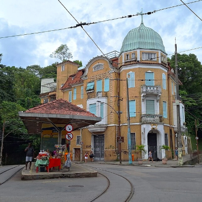

Melhores Lugares

Santa Teresa
Bairro histórico e boêmio situado no alto de uma colina, conhecido como
a "Montmartre carioca.
Corcovado
Ponto turístico icônico com vista panorâmica sobre o Rio de Janeiro.
Pão de açúcar
Ponto turístico icônico com vista panorâmica sobre o Rio de Janeiro.